Get developer access
Create a twitter account if required from which you intend the bot to post tweets or retweet.
Visit https://developer.twitter.com and complete the steps
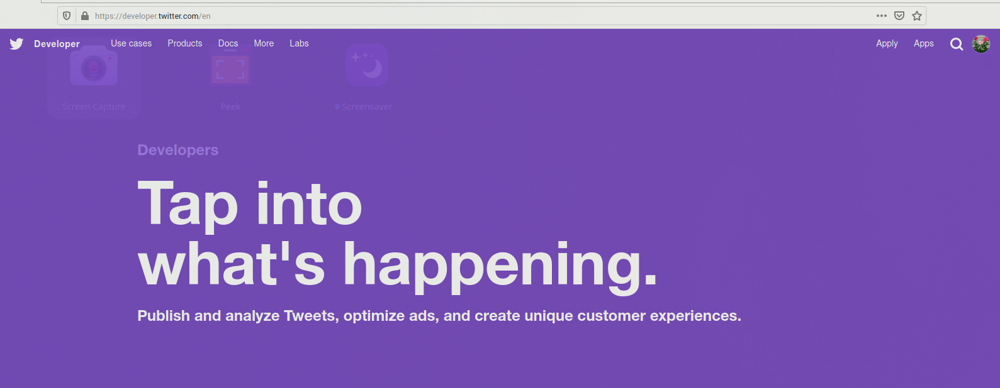 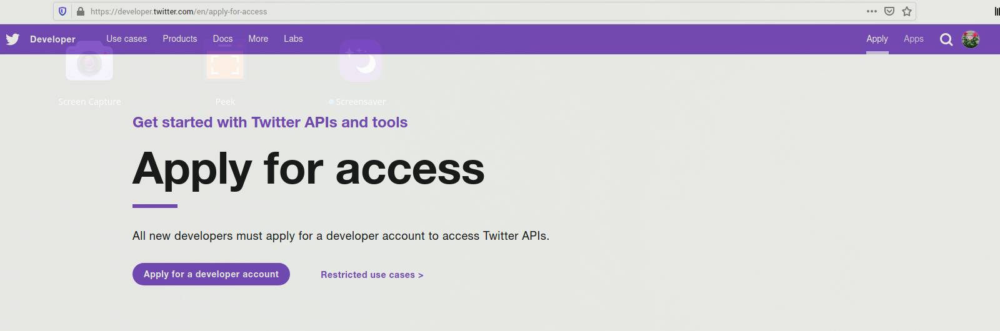
Select appropriate option from below that suits your need 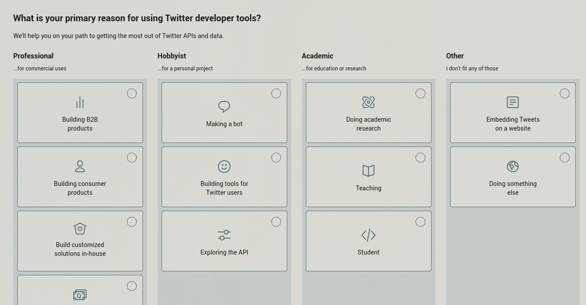
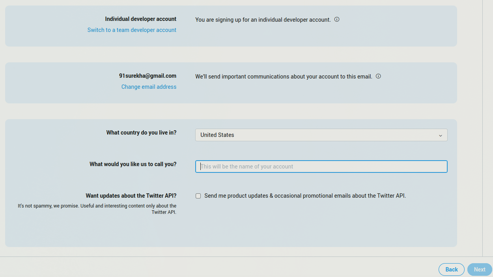
Complete the questionaire below, review, and submit the application. Twitter might contact you to verify few details or grant you developer access right away. 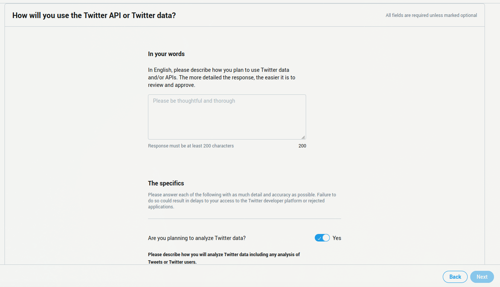
Once approved, go to Apps from your account, create an app and make note of API keys (API key, API secret key) which will be required to run the bot
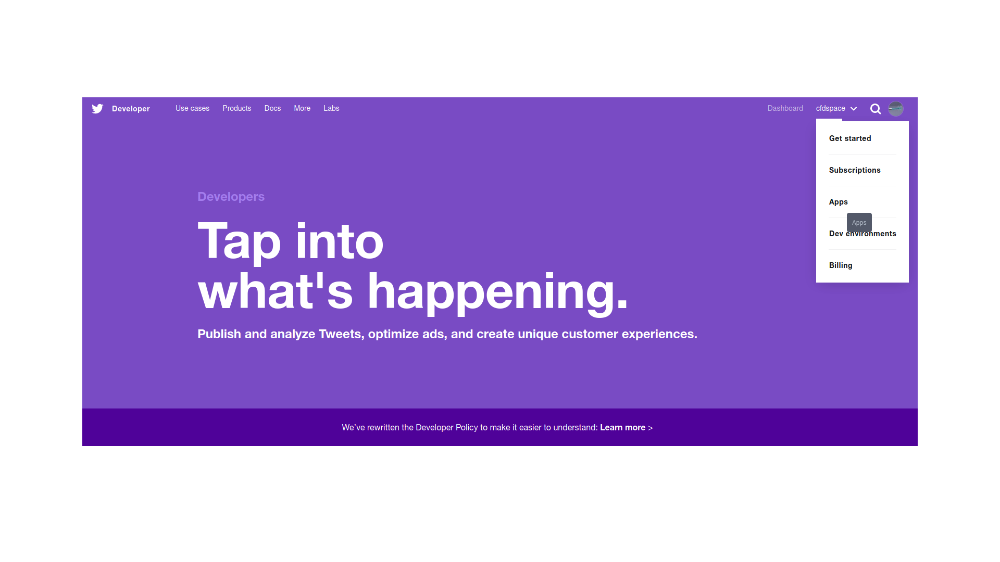
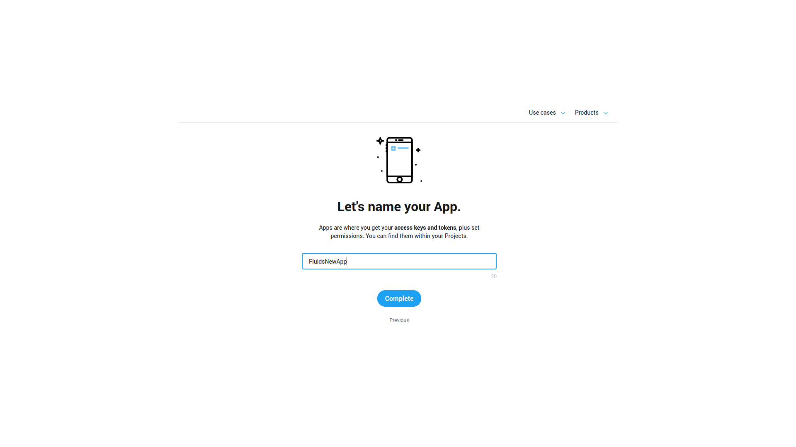
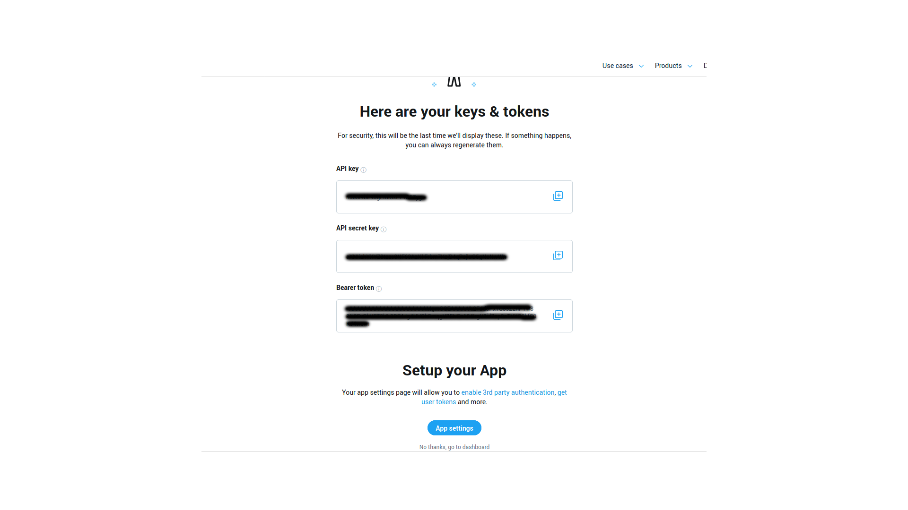
For the bot to retweet, set it Read and Write permissions
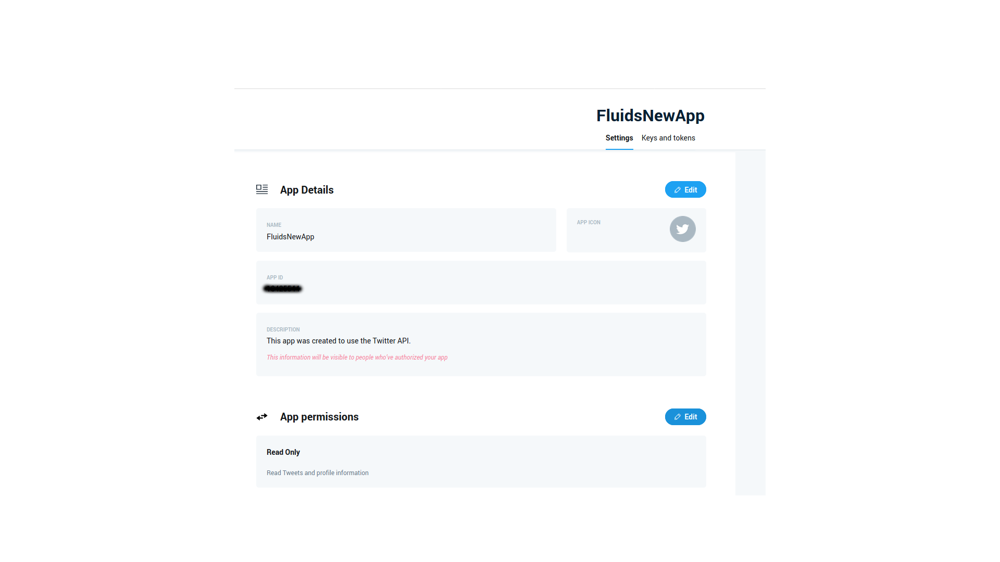
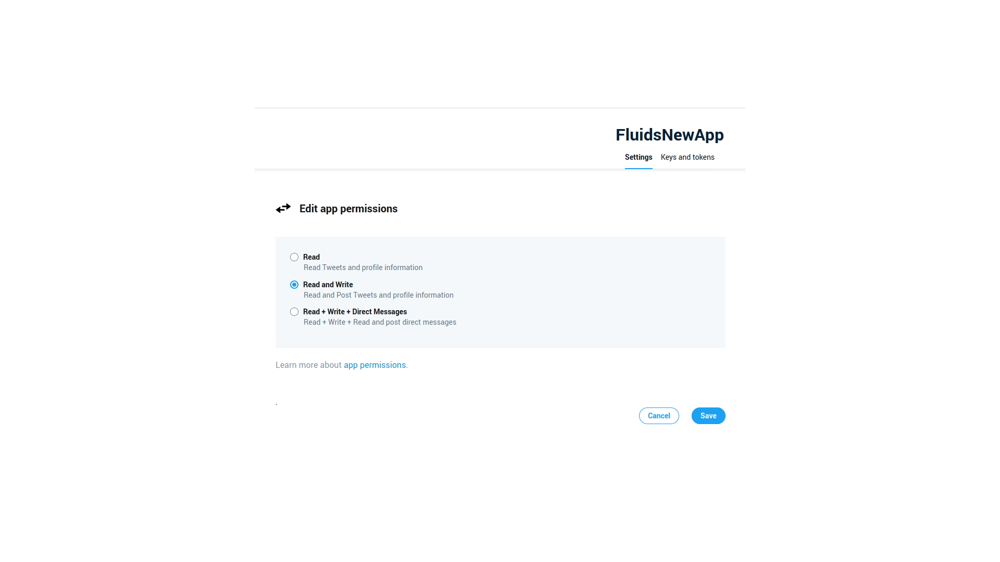
Finally generate and save Access token and Access secret token
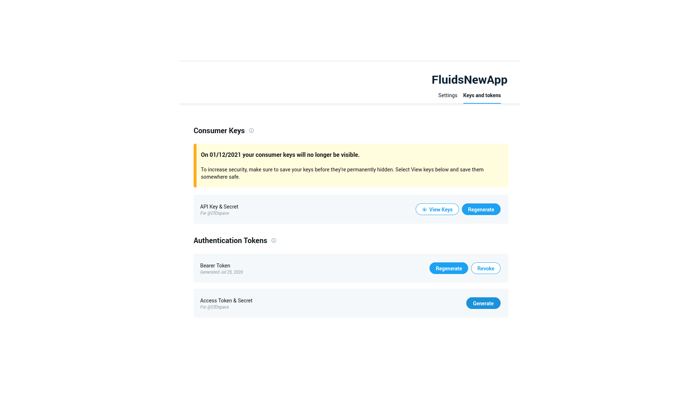 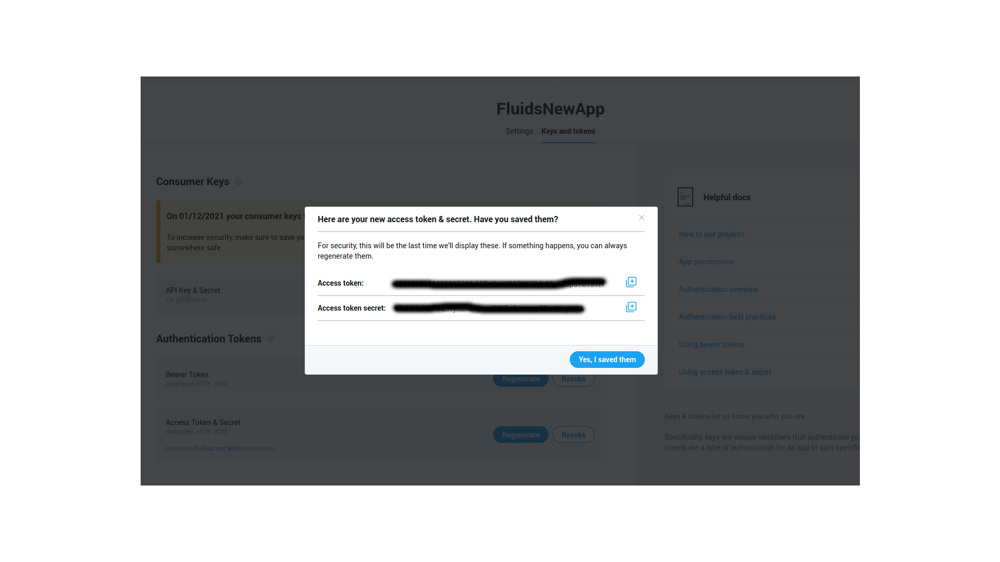